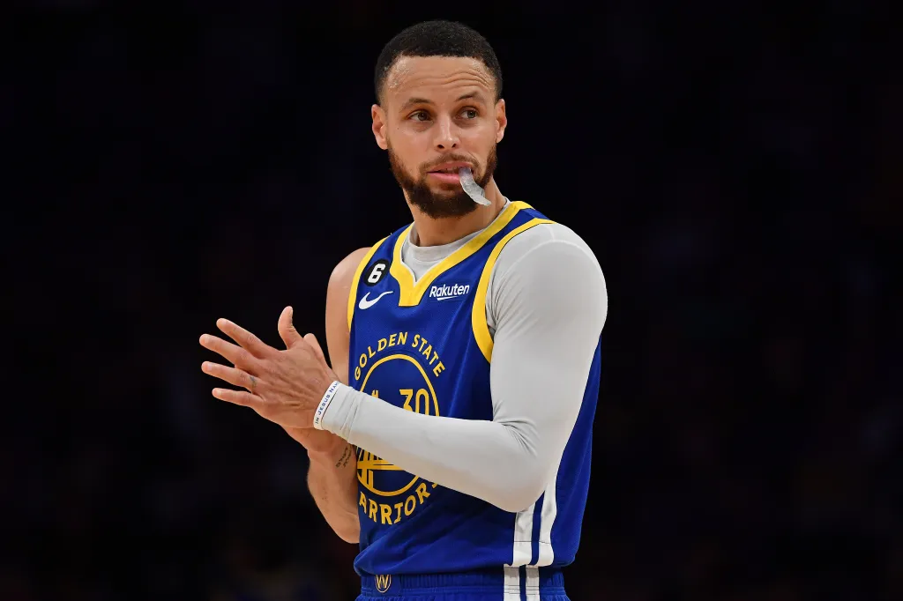

Wardell Stephen Curry II (/stɛfən/ STEF-ən;[1] born March 14, 1988) is an American professional basketball player and point guard for the Golden State Warriors of the National Basketball Association (NBA).
Near-unanimously considered the greatest shooter of all time, [2][3] Curry is credited with revolutionizing the sport by inspiring teams and players at all levels to more prominently utilize the three-point shot.[4][5][6][7] He is a four-time NBA champion, a two-time NBA Most Valuable Player (MVP), an NBA Finals MVP, an NBA All-Star Game MVP, an NBA Clutch Player of the Year, and the inaugural NBA Western Conference finals MVP.
He is also a two-time NBA scoring champion, a ten-time NBA All-Star, and a ten-time All-NBA selection (including four on the First Team). Internationally, he has won two gold medals at the FIBA World Cup and a gold medal at the 2024 Summer Olympics as part of the U.S. men's national team.
Curry is the son of former NBA player Dell Curry and the older brother of current NBA player Seth Curry. He played collegiately for the Davidson Wildcats, where he set career scoring records for Davidson and the Southern Conference, and helped the Wildcats advance to the Elite Eight in 2008.